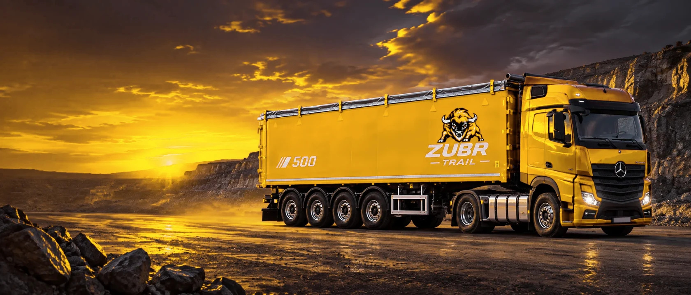
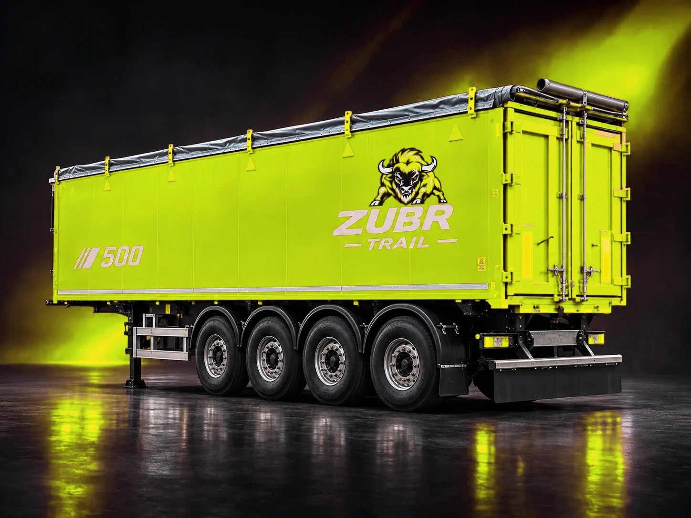

КОНЦЕПЦИЯ 01 / GOLD INDUSTRIAL
ZUBR GOLD
Чёрный и тёплое золото. Сильная промышленная подача, выразительные фотографии и быстрый подбор техники по грузу.
Обе версии — самостоятельные многостраничные сайты. Внутри доступны все шесть моделей SAT, каталог с фильтрами и сравнением, технологии, производство, новости, тест-драйв и контакты.

Чёрный и тёплое золото. Сильная промышленная подача, выразительные фотографии и быстрый подбор техники по грузу.

Неоновый лайм, светлая инженерная подача и графит. Конфигуратор, динамические характеристики и технологичная продуктовая витрина.